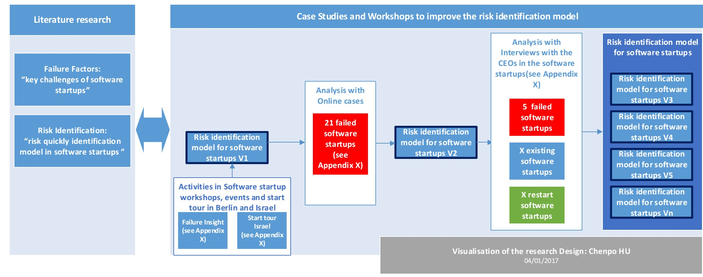

Hey, guys, welcome to visit the homepage of the risk identification model for software startups. I appreciate very much your cooperation.
WhatSoftware startups are newly created companies with little operating history and oriented towards producing cutting-edge products. (Carmine G et al, 2004) Software products are often innovative products or services based on the software they created (Shi et al, 2015; Duc et al, 2016).Of all companies, about 60% of start-ups survive to age three and roughly 35% survive to age 10, according to separate studies by the U.S. Bureau of Labor Statistics and the Ewing Marion Kauffman Foundation, a nonprofit that promotes U.S. entrepreneurship (D Gage, 2012). The most software startups fail in the early stages (Duc et al, 2016). So the focus of this paper is early stage software startups, which are younger than 5 years.
WhyDespite the increasing importance of software startups in the economy, few scientific studies attempt to address software startup issues. Most markets for software are global in scope and become dominated by a handful of products, so there are significant opportunities for long term profits and growth for a company bringing the right product to market. (Crowne, 2002) But the probability of failure for startups is high (Crowne, 2002; Kerr et al., 2014; CB Insights, 2014; SBA Office of Advocacy, 2016). New ventures such as Facebook, Linkedin, Spotify, Pinterest, Instagram, Groupon and Dropbox, to name a few, are examples of startups that evolved into successful businesses(Carmine G et al., 2004). Despite many success stories, the vast majority of startups fail. As their time and resources are more scarce, and one failed project can put them out of business. This study was aimed to develop a risk identification model to identify the risks early, that lead software startups to fail. On the one hand, business failure is a crucial element in a market economy (Albach, 1985; Pinkwart, 1992; Pinkwart et al., 2015) and also for founders themselves. On the other hand, this might have a negative impact on the economy (Pinkwart et al., 2015). Identifying the reasons for business failure and systematically working against it could lead to less business failures and therefore strengthen the economy (Pinkwart et al., 2015). So a risk identification model to identify the risks in software startups is very meaningful.
And I have some friends who want to build a software startup in the future or have already built one. Besides I see that it´s really not easy to be a founder but it´s very inspiring. Last but not least, me too, want to build a startup by my own. So I designed this Research Project in my research seminar to find a model that could help software startups to identify the biggest risks early. Hopefully that the final model will help software startups to increase their success rate.
HowYou can find the research design below.
The goal of this study is to develop a model to help software startups to be able to identify the risks that lead software startups to fail. In particular, the focus is on cutting-edge software startups. First of all, The first version of the risk identification model is done after the literature research and several small interviews in the startup events in Berlin and startup tour in Israel. X workshops were done with A failed software startups, Y successful startups and Z restarted startups. The risk identification model will evolve into a new version every time after each workshop. With the continual improvement after X workshops we get the final risk identification model.
To validate and improve the first version, 21 online cases about failed software startups was selected. To make sure that the online cases are reliable and sufficient, those criteria of the selection of the online cases are set: (1)failed in 5 years; (2)have a detailed company profile in 1 third party website; (eg. the company has in crunchbase a detailed profile, funding activities, news etc. )(3)have detailed article about the lessons that the founders learnt from the failure, which was wrote by the founder; (4)the founders can be tracted in twitter; (5) be mentioned by at least three reliable website. (see detailed information about the online cases in Appendix X) All companies, were bankrupted within the last four years (20013-2015), the company members were in majority developers and business administration. The products consist of search engine, Apps, AI, web application etc., launched in six different nations (United States (16), England (1), Germany (1), India(1), Estonia (1), Ukraine (1).
New risks were identified from these 21 online cases : . Then the literature was researched again concerning the newly identified risks. Finally we came to the second version of the risk identification model.
The risk identification model will evolve into a new version every time after each workshop. Then the software startups workshops helped in defining the failure factors as well as evaluating the significance of the influence of the different failure factors or risks that lead software startups to fail. When a new risks or topics concerning the risk identification model appeared during the workshop, literature research would be done again concerning the risks or topics that we found during the workshop. With the continual improvement after X workshops we get the final risk identification model.
I am excited about our work together!